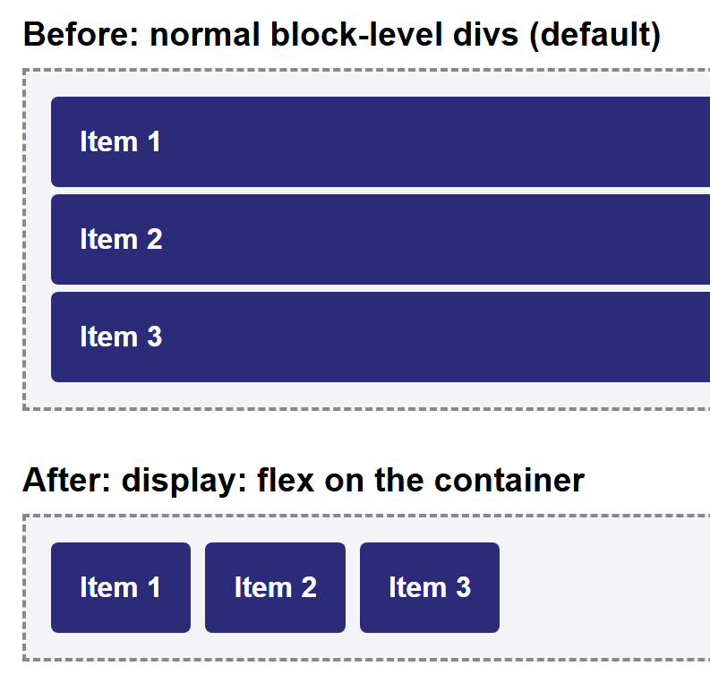
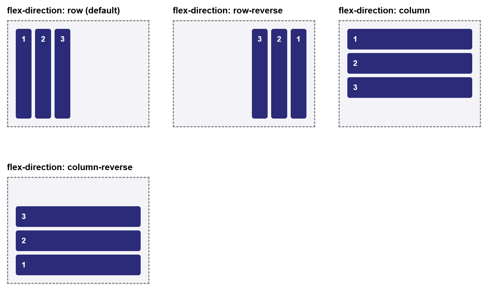
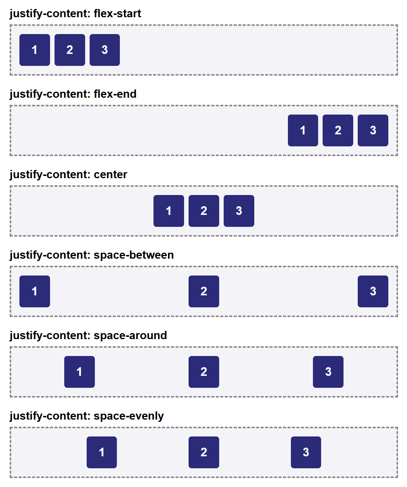
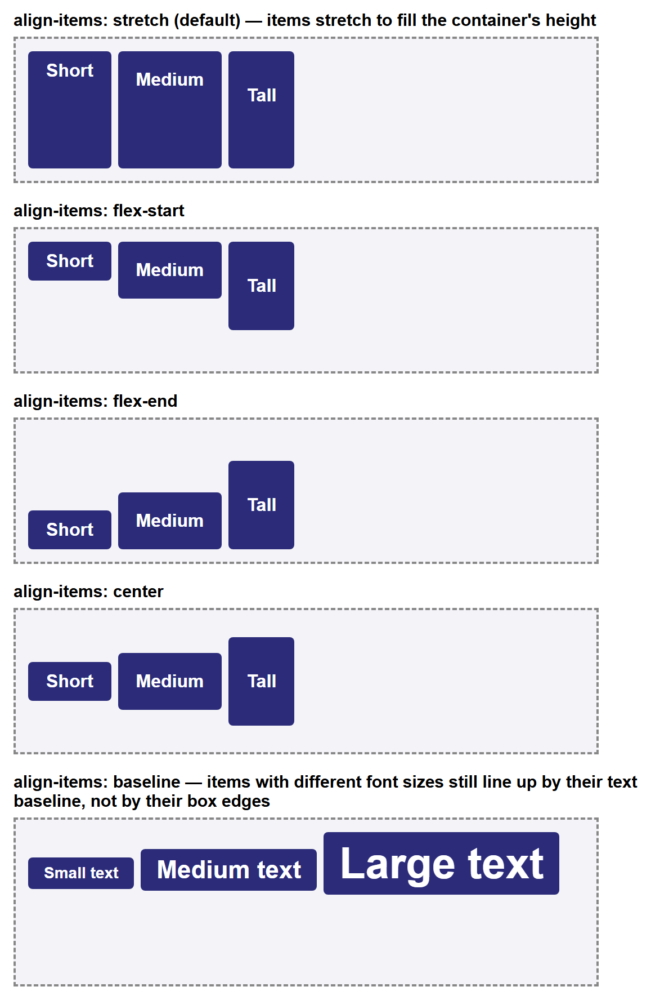
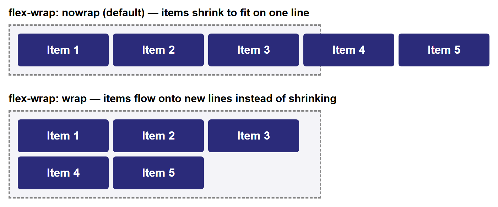
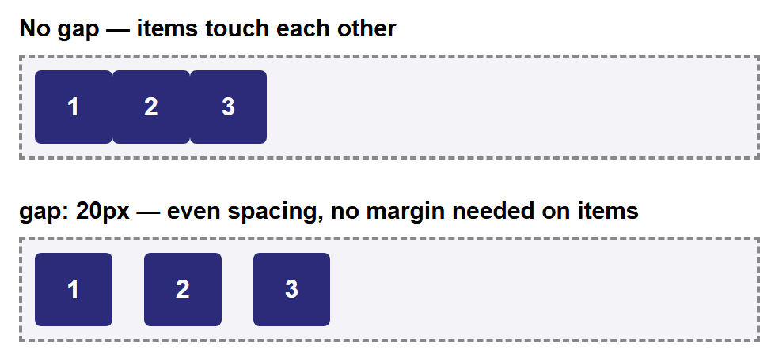
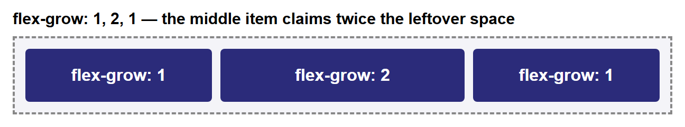
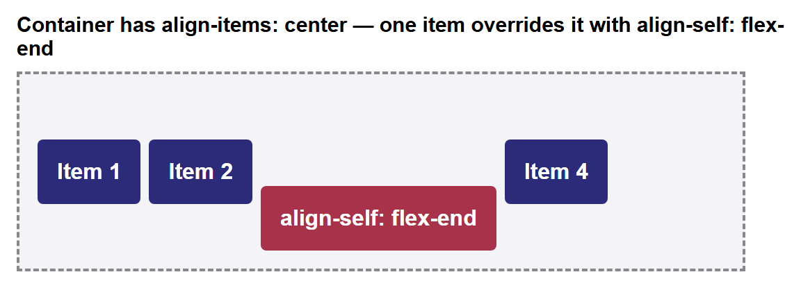
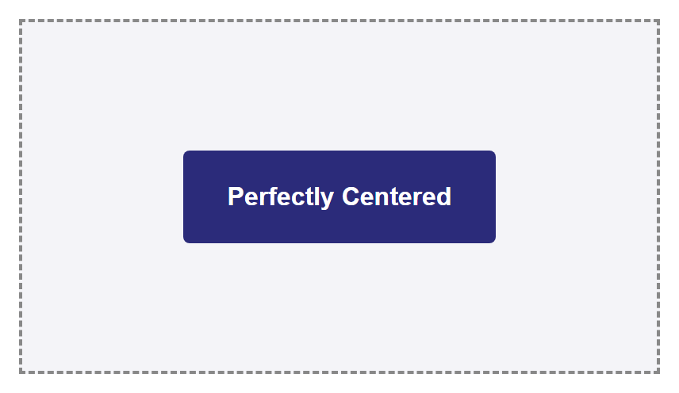

Tutorial: Flexbox Layout¶
Flexbox (short for the "Flexible Box" module) is a CSS layout system designed to arrange
items along a single line — either a row or a column — and distribute space between them
automatically. It replaced the float-based techniques from the
Layout Designing tutorial for the vast majority of everyday
layout problems: navigation bars, centering content, evenly spaced cards, and more, all
without the collapsing-parent workarounds that floats require. This tutorial builds up
every core Flexbox property from scratch, with a rendered screenshot for each one, and
ends with two complete real-world layout patterns.
Prerequisites: the CSS Box Model.
Familiarity with the float technique in Layout Designing is
helpful for context but not required.
In This Tutorial¶
- What Flexbox is, and why it replaced
floatfor most layout tasks display: flexand the two axes every flex container has: the main axis and the cross axisflex-direction— choosing whether the main axis runs as a row or a columnjustify-content— aligning items along the main axisalign-items— aligning items along the cross axisflex-wrap— letting items flow onto multiple lines instead of overflowing or shrinkinggap— spacing between items without per-item marginsflex-grow,flex-shrink,flex-basis, and theflexshorthand — controlling how items grow and shrink to fill available spacealign-self— overriding the cross-axis alignment for a single item- Two real-world patterns: a left-logo/right-links navbar, and perfect centering
Part 1: What Flexbox Is, and Why It Exists¶
Flexbox is a one-dimensional layout system: at any given moment, it arranges a group of items along a single line, either a row or a column. (CSS Grid, covered elsewhere, is the two-dimensional counterpart — rows and columns at the same time.)
Before Flexbox existed, developers reached for float to build side-by-side layouts, as
shown in Layout Designing. That technique works, but it comes
with real costs:
- Floated elements are pulled out of normal document flow, so their parent's height
collapses unless you remember to add
overflow: hidden(the "clearfix"). - Centering something both horizontally and vertically inside its container is
notoriously awkward with
floatand requires fragile tricks (fixed widths, negative margins, absolute positioning). - Distributing leftover space evenly between items — for example, spreading three nav
links out so they touch both edges of the bar — has no direct
floatequivalent.
Flexbox was designed specifically to solve these problems. You opt an element into it with one line of CSS, and its direct children immediately become easy to align, space out, reorder, and resize — no clearfixes required.
Part 2: display: flex and the Two Axes¶
Turning any element into a flex container takes one declaration:
The moment you do this, every direct child of .container becomes a flex item, and
two things change immediately, even with no other CSS added:
- Flex items line up in a row, left to right, instead of stacking vertically like normal block-level elements.
- Flex items shrink to only as wide as their content needs, instead of each filling the full available width.
<div class="container">
<div class="box">Item 1</div>
<div class="box">Item 2</div>
<div class="box">Item 3</div>
</div>
Here is the same three <div>s before and after adding display: flex to their parent.

Every other property in this tutorial only makes sense once you understand that a flex container has two axes:
- The main axis — the direction items are laid out along (a row, by default).
- The cross axis — the direction perpendicular to the main axis.
Which physical direction (horizontal or vertical) each axis points in depends entirely
on one property: flex-direction, covered next.
Part 3: flex-direction¶
flex-direction sets which way the main axis runs, and therefore which way items are
laid out:
| Value | Main axis direction | Items laid out |
|---|---|---|
row (default) |
Left to right | Horizontally, in source order |
row-reverse |
Right to left | Horizontally, reversed |
column |
Top to bottom | Vertically, in source order |
column-reverse |
Bottom to top | Vertically, reversed |
.row-example { flex-direction: row; }
.reverse-example { flex-direction: row-reverse; }
.column-example { flex-direction: column; }
Note that row-reverse and column-reverse only reverse the visual order — the
underlying HTML source order (and so tab order, and screen-reader order) is unchanged.

Main axis vs. cross axis, revisited
When flex-direction is row or row-reverse, the main axis is horizontal and the
cross axis is vertical. When it's column or column-reverse, that flips: the main
axis is vertical and the cross axis is horizontal. Keep this in mind for the next
two sections — justify-content always aligns along the main axis, and
align-items always aligns along the cross axis, whichever direction that
currently is.
Part 4: justify-content (Main-Axis Alignment)¶
justify-content controls how items are spaced out along the main axis — by
default, the horizontal direction, since flex-direction: row is the default.
| Value | Effect |
|---|---|
flex-start (default) |
Items packed at the start of the main axis |
flex-end |
Items packed at the end of the main axis |
center |
Items packed together in the center |
space-between |
Equal space between items; first and last items touch the edges |
space-around |
Equal space around each item (edges get half as much space as gaps between items) |
space-evenly |
Perfectly equal space between and around every item, edges included |

space-between is the value you'll reach for most often in practice — it's exactly what
a navbar with a logo on one side and links on the other needs, as you'll see in Part 10.
Part 5: align-items (Cross-Axis Alignment)¶
align-items controls how items are aligned along the cross axis — by default, the
vertical direction. This is the property that makes vertical centering trivial, which
was one of the hardest things to do with float.
| Value | Effect |
|---|---|
stretch (default) |
Items stretch to fill the container's cross-axis size |
flex-start |
Items aligned to the start of the cross axis |
flex-end |
Items aligned to the end of the cross axis |
center |
Items centered on the cross axis |
baseline |
Items aligned so their text baselines line up |
The difference between these only becomes visible when items have different sizes
(otherwise there's nothing to align differently), so the screenshot below uses items of
different heights — and, for baseline, items with different font sizes:

baseline is a niche value — you'll use stretch, center, and flex-start far more
often — but it's worth recognizing: it aligns by where the text sits, not by the
box edges, which is why the boxes in that row don't line up at their tops or bottoms at
all.
Part 6: flex-wrap¶
By default, a flex container tries to fit all of its items onto a single line along
the main axis. If there isn't enough room, items shrink (down to their content's minimum
size) or, once they can't shrink any further, they overflow the container. flex-wrap
changes that behavior:
| Value | Effect |
|---|---|
nowrap (default) |
All items forced onto one line; they shrink, and may overflow |
wrap |
Items that no longer fit flow onto a new line instead |
<div class="container">
<div class="box">Item 1</div>
<div class="box">Item 2</div>
<div class="box">Item 3</div>
<div class="box">Item 4</div>
<div class="box">Item 5</div>
</div>

In the nowrap panel, the items can't shrink past their min-width, so they overflow
the dashed container border entirely — a common surprise for beginners who forget that
nowrap is the default. Adding flex-wrap: wrap is usually the fix.
flex-flow shorthand
flex-direction and flex-wrap are so often set together that CSS provides a
shorthand: flex-flow: row wrap; sets both in one declaration, in that order.
Part 7: gap¶
Before gap, spacing flex items apart meant adding margin to every individual item —
and then usually writing an extra rule to remove the margin from the last item, so it
didn't leave unwanted space at the container's edge. gap solves this directly on the
container:
gap inserts even spacing between items only — never before the first item or after
the last — with no per-item CSS needed at all.

gap also accepts two values (gap: 10px 20px; for row-gap and column-gap
separately) and works the same way once flex-wrap: wrap produces multiple lines.
Part 8: flex-grow, flex-shrink, flex-basis, and the flex Shorthand¶
So far, every property in this tutorial has lived on the container. These next three live on individual items, and control how each item grows or shrinks to fill (or fit into) the leftover space along the main axis.
flex-basis— an item's starting size along the main axis, before any growing or shrinking happens. Defaults toauto(the item's natural content size).flex-grow— a unitless number (default0) describing how much of the container's leftover space this item should claim, relative to its siblings.flex-shrink— a unitless number (default1) describing how much this item should shrink, relative to its siblings, when there isn't enough room for everyone'sflex-basis.
The most important thing to understand about flex-grow is that its values are
ratios, not percentages, and they only apply to space left over after every item's
flex-basis has been accounted for:
With these three items in the same container, the leftover space is split into 4 equal
shares (1 + 2 + 1 = 4): .item-a and .item-c each get 1 share, and .item-b gets 2
shares — twice as much extra space as either of its siblings, not simply "twice as
wide" overall.

In practice, you'll rarely set flex-grow, flex-shrink, and flex-basis separately.
CSS provides a shorthand, flex, that sets all three at once, in that order:
A very common shorthand pattern is flex: 1;, which expands to
flex-grow: 1; flex-shrink: 1; flex-basis: 0%; — it tells an item to ignore its content
size entirely and simply take an equal share of all available space alongside any other
flex: 1; siblings.
Part 9: align-self¶
align-self overrides align-items for exactly one flex item, without affecting its
siblings. It accepts the same values as align-items (flex-start, flex-end,
center, stretch, baseline), plus auto (the default, meaning "use whatever the
container's align-items says").
.container {
display: flex;
align-items: center; /* applies to every item by default */
}
.special-item {
align-self: flex-end; /* this one item ignores align-items and aligns to the end instead */
}

This is the tool to reach for whenever one item in a row genuinely needs different cross-axis alignment than the rest — for example, a "Pro" badge that should hug the bottom of a row of otherwise vertically centered pricing cards.
Part 10: Common Real-World Patterns¶
With every property above, you can now build the two layouts that come up constantly in real projects.
Pattern A: A Navbar with space-between¶
A classic navbar has a logo (or site name) pinned to the left and navigation links
pinned to the right, with whatever space is left between them. This is exactly what
justify-content: space-between was designed for:
<nav class="navbar">
<div class="logo">MyBrand</div>
<ul class="nav-links">
<li><a href="#">Home</a></li>
<li><a href="#">About</a></li>
<li><a href="#">Contact</a></li>
</ul>
</nav>
.navbar {
display: flex;
justify-content: space-between;
align-items: center;
background-color: #2b2b7a;
color: white;
padding: 14px 24px;
}
.nav-links {
display: flex; /* nested flex container, for the links themselves */
gap: 24px;
list-style: none;
margin: 0;
padding: 0;
}
.nav-links a {
color: white;
text-decoration: none;
font-weight: bold;
}
Notice the .nav-links list is itself a flex container (with gap handling the
spacing between individual links) nested inside the outer .navbar flex container —
flex containers nest freely, with each one managing only its own direct children.
Compare this to Part 5 of Layout Designing, where a horizontal
menu required floating every <li> and containing them with overflow: hidden. Here,
two declarations on the parent (display: flex; justify-content: space-between;) do
the entire job.
Pattern B: Perfect Centering¶
Centering an element both horizontally and vertically inside its container was one of
the most awkward problems in CSS before Flexbox — it typically required a mix of
position: absolute, fixed pixel dimensions, and negative margins calculated by hand.
With Flexbox, it's two declarations on the container:
.centering-box {
display: flex;
justify-content: center; /* centers horizontally, along the main axis */
align-items: center; /* centers vertically, along the cross axis */
height: 220px;
}

This works regardless of the centered item's size — unlike the old fixed-width, negative-margin tricks, you never need to know the item's exact dimensions in advance.
Try It Yourself¶
- Take the navbar from Pattern A and change
justify-content: space-between;tojustify-content: flex-end;. Observe that the logo and links now bunch up together on the right, with empty space on the left — confirming thatspace-betweenis doing all the work of pushing them apart. - Build a row of four
<div>"cards" inside a flex container. Give the containerflex-wrap: wrap;and each card a fixedwidth: 200px;. Shrink your browser window (or the container's width) and watch the cards reflow from one row into two, then into four, with no media queries involved. - Take the
flex-growexample from Part 8 and change the three values to1,1, and4. Predict how the space will be split before reloading, then confirm your prediction against the rendered result. - Build a simple three-item "pricing table" as a flex row with
align-items: flex-end;on the container, then usealign-self: stretch;on just the middle item so it alone grows to match the tallest card — a common way to visually highlight a "recommended" plan. - Recreate Pattern B (perfect centering), then add a second item inside
.centering-box. Notice both items now center together as a group along the main axis —justify-contentcenters the set of items, not each one individually.
Key Takeaways¶
- Flexbox is a one-dimensional layout system:
display: flexarranges direct children along either a row or a column, one line at a time. - Every flex container has a main axis and a cross axis;
flex-directiondecides which physical direction (row or column) each one points in. justify-contentaligns items along the main axis:flex-start,flex-end,center,space-between,space-around,space-evenly.align-itemsaligns items along the cross axis:stretch(default),flex-start,flex-end,center,baseline;align-selfoverrides it for one item.flex-wrap: wraplets items flow onto new lines instead of shrinking or overflowing when they don't all fit on one line.gapspaces items apart directly on the container, with no per-item margins needed.flex-grow,flex-shrink, andflex-basis(usually set together via theflexshorthand) control how individual items grow or shrink to fill leftover main-axis space, in proportion to each other.- Two declarations —
justify-content: space-between;for navbars, andjustify-content: center; align-items: center;for perfect centering — replace layout problems that used to require fragilefloatorpositionhacks.